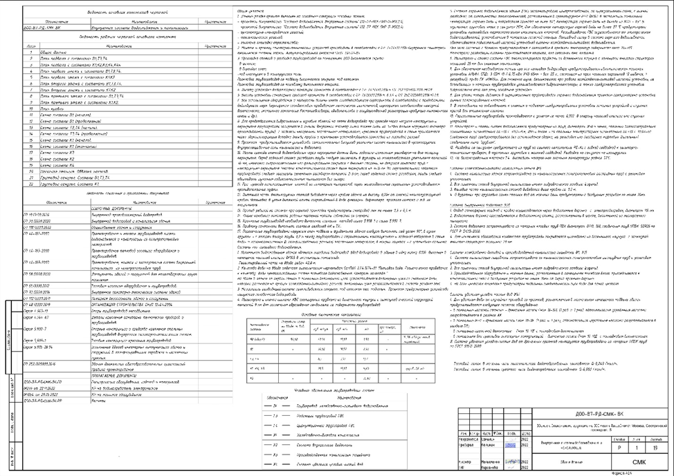
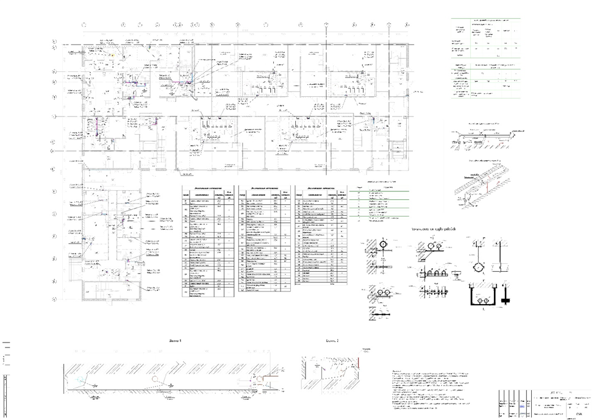
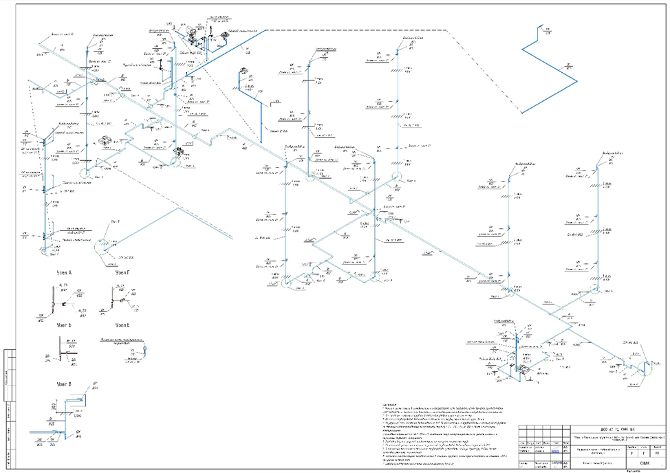
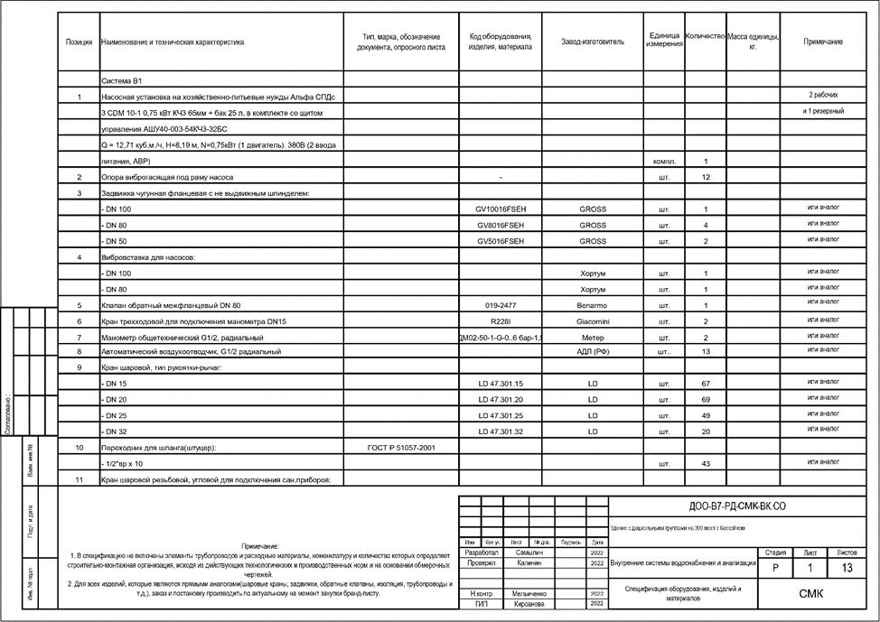
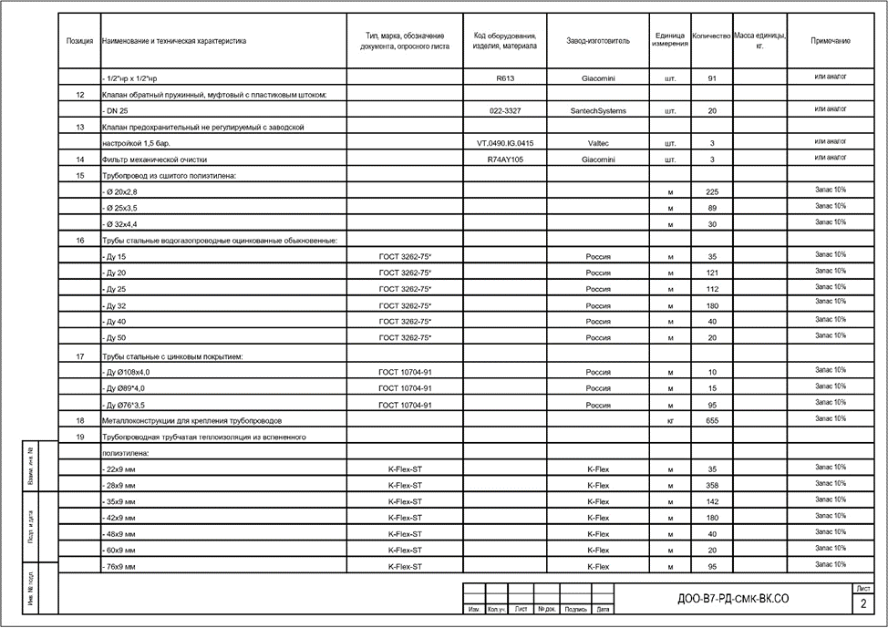
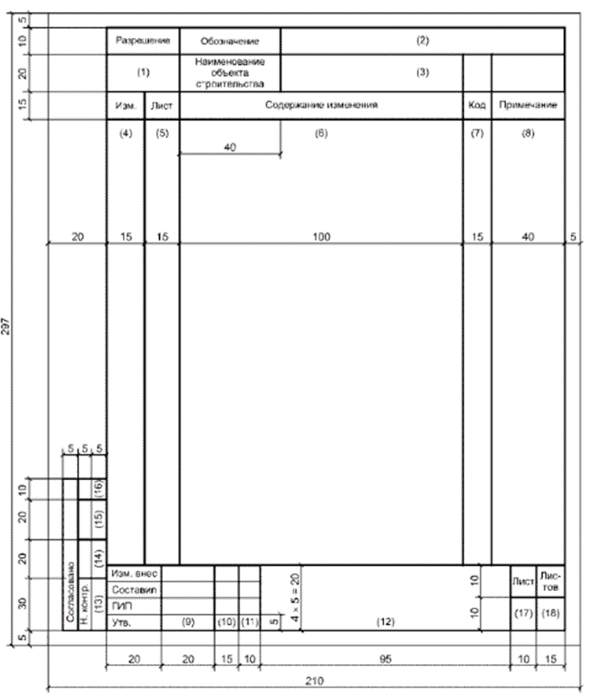

Рабочая документация – как превратить проект в чертеж, по которому можно строить

ПД отвечает на вопрос: «Что делать?» РД – на вопрос: «Как именно делать?»
В этом уроке подробнее рассмотрим состав РД и какие частые ошибки выявляются на стройке.
Рабочая документация может быть сформирована в бумажном виде либо в виде информационной модели. Но заказчики все чаще требуют представлять РД в машиночитаемом формате, пригодном для включения в ЕГРЗ. Готовить ПД и РД можно одновременно согласно ч. 2.1 ст. 48 ГрК РФ.
Полный комплект рабочей документации разрабатывают не всегда. В постановлении Правительства от 12.04.2025 № 486 указали, в каких случаях допускается не формировать РД для ОКС:
- если не нужно разрешение на строительство (п. 17 ст. 51 ГрК);
- если не нужна экспертиза проектной документации или результатов инженерных изысканий (п. 2 ст. 49 ГрК).
Рабочая документация обеспечивает детальное руководство для выполнения строительно-монтажных работ, очень важно снизить количество корректировок в процессе разработки. Рассмотрим три самые распространенные ошибки, которые присутствуют практически в каждой рабочей документации.
Проблема 1: неполный комплект РД. Часто подрядчик начинает работы без деталировки узлов. В итоге качество снижается, а доказать правоту невозможно.
Решение: важно при передаче документации фиксировать, в каком объеме передается пакет документации, так как из-за спешки могут выдать в производство работ «сырую» документацию, в результате чего возможны дополнительные затраты на переделывание работ.
Указывайте в сопроводительном письме в какой комплектации передается РД, окончательный ли это комплект или будут еще дополнения.
Проблема 2: ошибки в спецификациях. Марки материалов не совпадают с фактическими, что выявляет проверка стройнадзора.
Решение: перед началом работ тщательно проверяйте спецификации на соответствие фактическим материалам и убедитесь, что все материалы согласованы с заказчиком.
Пропишите в примечаниях спецификации, что не допускается замена материалов без согласования.
Проблема 3: несогласованность между ПД и РД. Важно изменения РД вносит также в ПД
Решение: ведите реестр несоответствий ПД и РД и фиксируйте любые отклонения в нем, важно писать причину и основание внесения изменения.
Состав рабочей документации утверждается в здании на проектировании. Требования к названиям комплектов также могут быть установлены в ЗнП.
В состав основных комплектов рабочих чертежей включают общие данные по рабочим чертежам, чертежи и схемы.
В рабочих чертежах допускается применять типовые строительные конструкции, изделия и узлы путем ссылок на документы, содержащие чертежи этих конструкций и изделий. К ссылочным документам относят:
- стандарты (технические условия) на строительные изделия;
- чертежи типовых конструкций, изделий и узлов.
Ссылочные документы в состав рабочей документации, передаваемой заказчику, не входят. Проектная организация при необходимости передает их заказчику по отдельному договору.
Рассмотрим подробнее состав рабочей документации на примере комплекта водоснабжения и водоотведения.
После титульных листов размещают лист с общими данными, на котором приводят:
- ведомость рабочих чертежей и прилагаемых материалов,
- ведомость ссылочных и прилагаемых документов,
- ведомость спецификаций (при наличии в основном комплекте рабочих чертежей нескольких спецификаций),
- условные обозначения, которые не указаны на остальных листах РД,
- общие указания
- другие данные, указанные в соответствующих СПДС и ЗнП.
В общих указаниях пункты пишут с новой строки и не повторяют ту информацию, которая будет указана на других листах РД. Чаще всего в них прописывают информацию, которая установлена ЗнП. Например:
- сведения о документах, на основании которых принято решение о разработке рабочей документации,
- запись о соответствии РД нормативным документам, ЗнП, техническим условиям,
- перечень нормативных документов, в соответствии с которыми подготовлена рабочая документация,
- перечень видов работ, которые оказывают влияние на безопасность здания или сооружения и для которых необходимо составлять акты освидетельствования скрытых работ, ответственных конструкций и участков сетей инженерно-технического обеспечения,
- эксплуатационные требования, предъявляемые к проектируемому зданию или сооружению (при необходимости).

Затем идут поэтажные планы систем, его детализация зависит от требований, указанных в ЗнП.

И аксонометрические схемы с указанием отметок для монтажа и всех деталей.
В рабочих чертежах допускается применять типовые строительные конструкции, изделия и узлы путем ссылок на документы, содержащие чертежи этих конструкций и изделий. К ссылочным документам относят:
- стандарты (технические условия) на строительные изделия;
- чертежи типовых конструкций, изделий и узлов.
Соответственно, вы можете указать над узлом информацию, где посмотреть деталировку данного узла, если иное не будет установлено ЗнП. Пример чертежа аксонометрии смотрите на картинке.

А также в комплект добавляют спецификации изделий, материалов и оборудования.
В спецификацию записывают материалы, непосредственно входящие в специфицируемую конструкцию, изделие и т.п. Спецификацию делят на разделы и подразделы согласно требованиям соответствующих стандартов СПДС, а также требованиям заказчика. Наименование каждого раздела и подраздела указывают в виде заголовка в графе «Наименование» и подчеркивают.


Если комплект РД соответствует требованиям НПД и ПД, то ответственный представитель застройщика визирует и проставляет штамп «В производство работ». Обязательно нужно указать дату на каждом листе комплектов РД. Если процесс осуществляется в электронном виде, то подписывают электронной подписью.
Для фиксации изменений в РД используют форму ведомости разрешения на внесение изменений из приложения Л к ГОСТ Р 21.101-2020. (А также в приложениях вы можете скачать шаблон разрешения).

При внесении изменений проектировщики также совершают ошибки. Чаще всего это следующие ошибки:
- согласование «в переписке», которое юридически неприемлемо (если только нет этого пункта в договоре);
- отсутствие подписей проектировщика, заказчика и других согласующих специалистов (например, из смежных разделов);
- замена материалов без внесения изменений в чертежи;
- ведение параллельной, «теневой» РД, которая не фиксируется официально и потом исчезает.
И помните, что вы больше не проектируете для бумаги. Вы проектируете для стройки